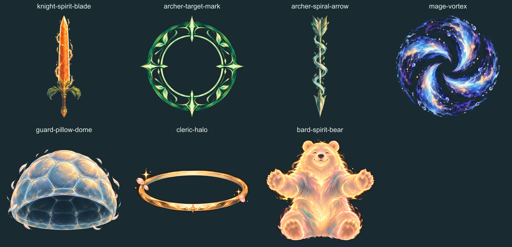

Puff Slayers · ภาพท่าครบ 7 อาชีพ
อัลติ 12 เฟรม · ตีปกติ 6 เฟรม · ภาพท่าประจำตัว 7 ไฟล์
เลือกอาชีพแล้วเล่นภาพเคลื่อนไหว หรือหยุดเพื่อดูทีละเฟรม
1 / 12

ดาบแครอท · เป้าเล็ง · ลูกศรเกลียวลม · วังวน · โดมหมอน · รัศมี · หมีวิญญาณ
 ภาพทุกเฟรมหลังตัดพื้นหลัง ใช้ไฟล์เดียวกับที่เกมโหลด
ภาพทุกเฟรมหลังตัดพื้นหลัง ใช้ไฟล์เดียวกับที่เกมโหลด